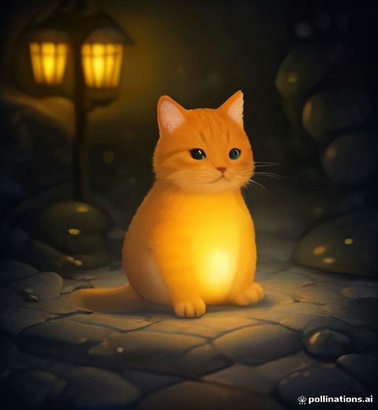
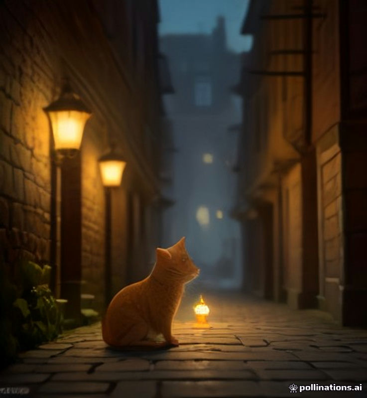
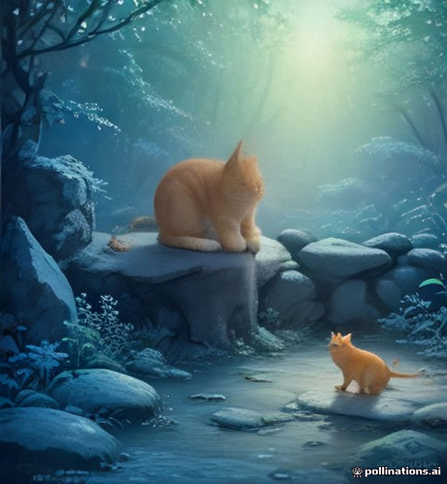
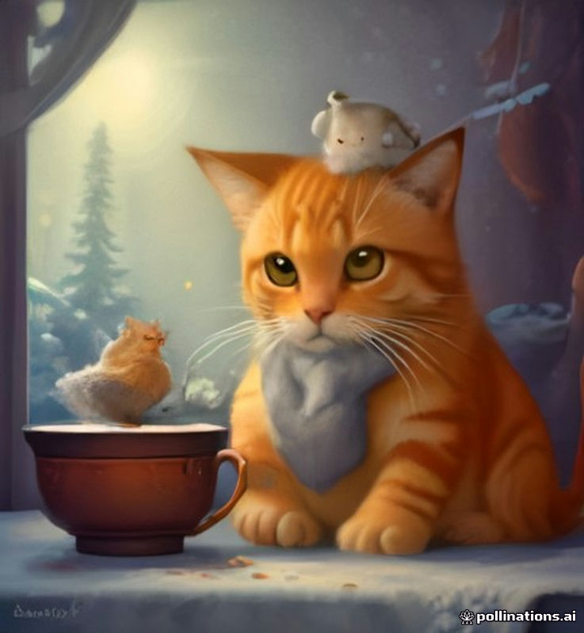
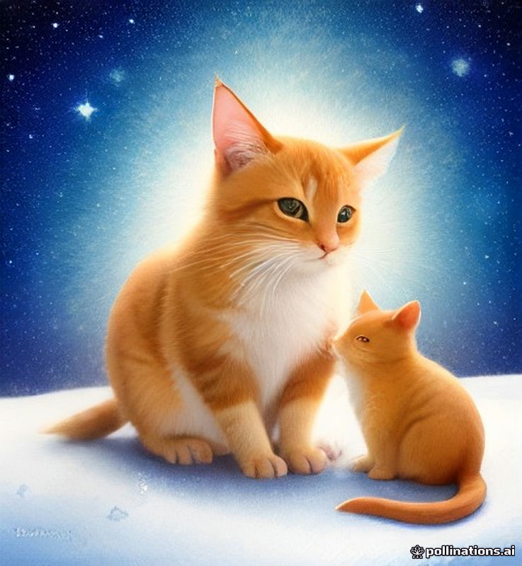

A quiet winter evening at the Cobblestone Seating Nook brings a glowing frost-moth and a sweet unexpected friendship.

The chilly evening air drifted through Loki's Town as night began to fall. Loki and Pip walked down to the Cobblestone Seating Nook, carrying a glowing glass lantern to light the dusk. The stone bench felt cool and quiet beneath the quiet trees. As they settled in, a tiny silver moth with wings like spun ice glided down from the chilly shadows. It hovered gently above the glass, drawn not to the flame inside, but to the smooth stone surfaces waiting in the twilight.

The frost-moth landed softly on the edge of the stone bench. Wherever its delicate feet tapped, micro-crystals of frost bloomed instantly. Delicate icy vines and tiny lace flowers stretched across the dark stone like magic embroidery. Pip leaned forward from Loki's ear, his eyes wide with amazement as he watched the pattern grow. The moth fluttered its translucent wings, leaving sparkling trails of silver dust in the crisp air.

Loki carefully poured warm berry tea from his flask into a tiny carved acorn cup and set it on the bench. The frost-moth hovered over the rising steam, dusting the wooden edge with shimmering ice crystals before alighting gently on the cup's rim. It seemed to enjoy the sweet aroma of wild berries and warm honey, resting its delicate legs while Pip offered a tiny crumb of toasted gingerbread.

Before fluttering back up into the starry midnight sky, the moth left behind one last gift: a glowing frost star right in the center of the bench. The Cobblestone Seating Nook was no longer just a cold place to rest; it was a sparkling corner filled with warmth and light. Loki wrapped his teal scarf snug around his neck, smiling warmly as Pip squeaked a happy goodnight to their fluttering winter guest.